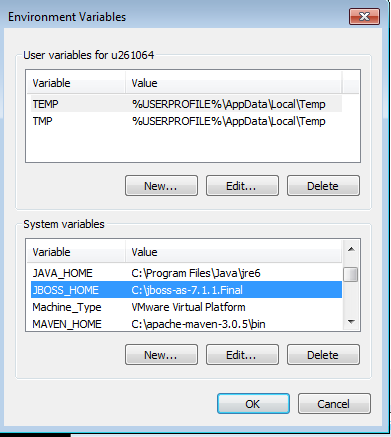
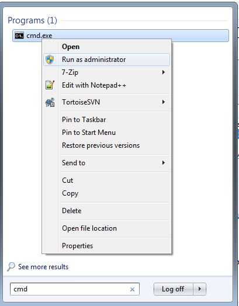
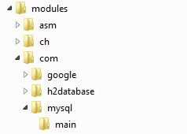
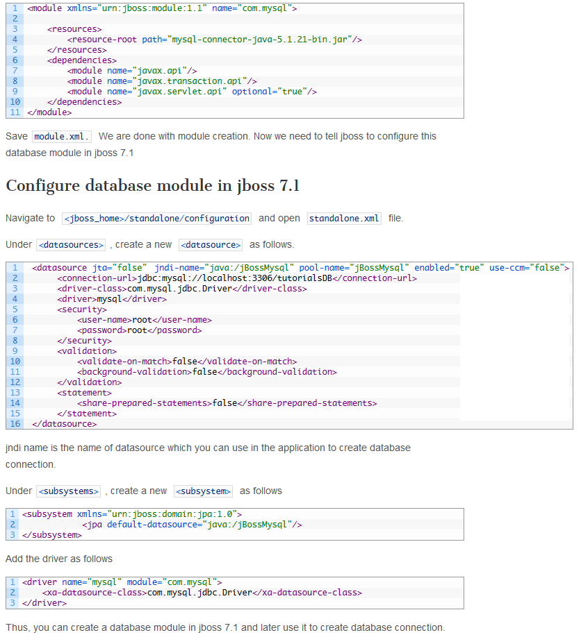

JBOSS 7.1.1 installation on Windows 7
Download JBOSS7.1.1 Final from following link http://www.jboss.org/jbossas/downloads/ Step 2: Extract jboss-as-7.1.1.Final.Zip file on C:\ Drive , like c:\jboss-as-7.1.1.Final Step 3: Set JBOSS_HOME property into environment variable as below.   go to JBOSS home directory like C:\jboss-as-7.1.1.Final\bin run command standalone. like C:\jboss-as-7.1.1.Final\bin>standaloneHow to add Users in JBOSS Server
D:\Executables\jboss\bin>add-user.bat What type of user do you wish to add? a) Management User (mgmt-users.properties) b) Application User (application-users.properties) (a): a Enter the details of the new user to add. Realm (ManagementRealm) : ManagementRealm Username : ratnaparkhi Password : mvrmvr Re-enter Password : mvrmvr About to add user 'ratnaparkhi' for realm 'ManagementRealm' Is this correct yes/no? y D:\Executables\jboss\bin>
database module in jboss 7.1
To configure mysql database module in jboss 7.1, we have to, Create module for mysql. Configure module in jboss 7.1 configuration file i.e. standalone.xml Creating a module : Under your jboss 7.1 installation, navigate to/modules . For e.g. If I have installed jboss in C drive, then the location would be C:\jboss-as-7.1.1.Final\modules Navigate to com directory Create a folder called mysql under com . Create a folder called main under mysql Under mysql folder, copy your mysql_connector jar file Under mysql folder, create a new file called module.xml Your folder structure should be:  and under main folder, Now, open module.xml and paste following code in it. 
How to configure Data Source (JDBC Connection Pool) in JBoss AS 7 standalone mode?This page tells you how to configure Data Source (JDBC Connection Pool) on JBoss AS 7.x server on standalone mode. Here are the step by step instructions. We are configuring Oracle database. 1) Download ojdbc6.jar file from Oracle Database 11g Release 2 JDBC Drivers 2) Goto JBoss_home_directory/modules folder. 3) Create folder structure like 'com/oracle/ojdbc6/main/' inside JBoss_home_directory/modules folder. 4) Create module.xml file inside main folder, and paste below content inside module.xml file.
5) Copy ojdbc6.jar file inside main folder along with module.xml file. 6) Goto JBoss_home_directory/standalone/configuration folder, and open standalone.xml file. 7) Search for datasources and have below configuration:
Done... your datasource configuration is ready. Use above configured data source to connect to database. |